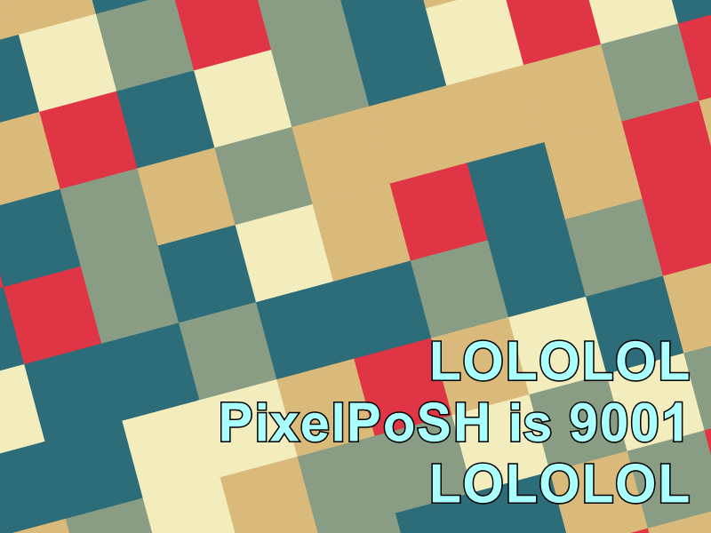
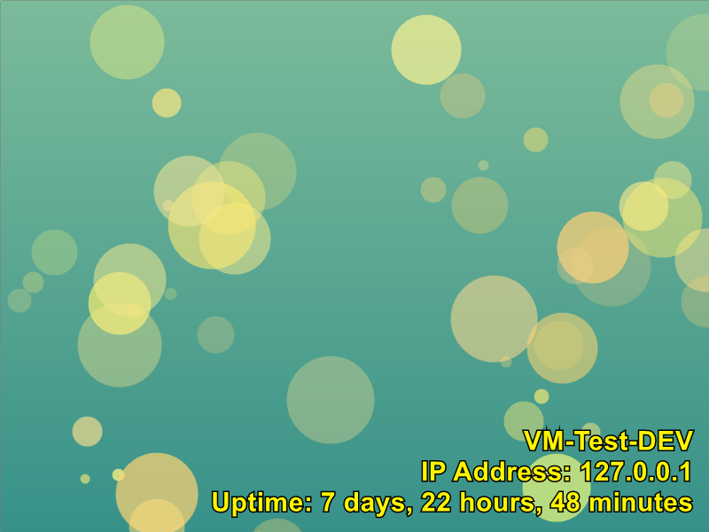

PixelPoSH
PixelPoSH
Link: Github
(Generated with PixelPoSH)
PixelPoSH
PixelPoSH is a PowerShell module that generates customizable, random backgrounds using System.Drawing in .NET. This tool allows users to create images with various graphical patterns like bubbles, concentric circles, stripes, squares and 2 typed of waves. It’s perfect for quickly generating backgrounds for desktops, websites, or any project that could use a splash of color and creativity. PixelPoSH also supports colored text!
Example images
Please see the EXAMPLES for some example output!
Features
- Generate images with specified width and height.
- Choose between multiple patterns: bubbles, concentric circles, stripes, squares and 2 types of waves.
- Add optional text to the image: this can be colored and you can specify textsize.
- Save images to a specified path in PNG format.
colormind.ioAPI integration for fetching color palettes.
Prerequisites
Before you use PixelPoSH, make sure to have PowerShell and the System.Drawing assembly loaded on your machine. This module is built on .NET and requires proper setup to function.
Installation
Download the PixelPoSH script or clone this repository to your local machine:
git clone https://github.com/dabeastnet/PixelPoSH.git
Import the module into your PowerShell session:
Import-Module ./path/to/PixelPoSH.psm1
Usage
To generate an image, you can use the New-RandomImage function with its parameters. By default, the script randomly selects one of the 4 modes: Bubble, Circle, Stripe, Square, PaletteWave and GradientWave. For each mode you define yourself, it will randomly select one of the modes.
Color Palettes
The script uses the colormind.io API to fetch a random color palette. If the API is not available (for example for offline use), It will select one of the 100 included color palettes.
If you wish to update these palettes, simply run Get-StaticPalettes.ps1. This will generate a textfile at c:\temp\B64 encoded palette.txt. Use the contents of this file to update the B64 string in the PixelPoSH.psm1 file in the Get-ColorPalette subfunction.:
function Get-ColorPalette {
...
#Static list of 100 palettes
#region B64
$B64Palettes = "[BASE 64 ENCODED PALETTES GO HERE]"
#endregion B64
...
}#Get-ColorPalette
Examples
Below you can find some examples:
Parameters
The following are the available parameters, with it’s default values:
[int]$ImageWidth = 800,
[int]$ImageHeight = 600,
[string]$Path = "C:\temp\Background.png",
[string]$Text = $null,
[int]$TextSize = 40,
[String]$TextColor = "#FFFFFF",
[switch]$Bubble,
[switch]$Circle,
[switch]$Stripe,
[switch]$PaletteWave,
[switch]$GradientWave,
[switch]$Square
Generate an image with default settings
This command creates an 800x600 image with a randomly selected pattern and saves it to C:\temp\Background.png.
New-RandomImage
Create a 1920x1080 image with a square pattern and custom text
New-RandomImage -ImageWidth 1920 -ImageHeight 1080 -Path "C:\temp\test.png" -Text "Sample Text" -Square
Generate an image with a bubble or square pattern
New-RandomImage -Bubble -Square
Create a 800x600 image with a multiline, colored custom text in size 60
New-RandomImage -Text "LOLOLOL`nPixelPoSH is 9001`nLOLOLOL" -TextSize 60 -TextColor "#AAFFFF"
# The (backtic) `n is used as a newline indicator

Advanced text
Here is an example to display machinename, IP and uptime on the image.
#Fetch the info
$IP = (Get-NetIPConfiguration | Where-Object { $_.IPv4DefaultGateway -ne $null -and $_.NetAdapter.Status -eq 'Up' }).IPv4Address.IPAddress
$Uptime = (get-date) - (gcim Win32_OperatingSystem).LastBootUpTime
$FormattedUptime = "{0} days, {1} hours, {2} minutes" -f $Uptime.Days, $Uptime.Hours, $Uptime.Minutes, $Uptime.Seconds
#Generate the image in a yellow text
New-RandomImage -Text "$env:COMPUTERNAME`nIP Address: $IP`nUptime: $FormattedUptime" -TextSize 30 -TextColor "#FFF500"

Contributing
Contributions to PixelPoSH are welcome! Please feel free to submit pull requests or create issues for bugs and feature suggestions on our GitHub repository.
License
This project is licensed under the GNU General Public License v3.0 - see the COPYING file for more details.